Technical and on-page SEO, content architecture, local search and discovery channels four years of documented results across 20+ brands and agency accounts.
The portfolio prioritizes capabilities that are backed by CV and project evidence not a generic skills list.
Progression from content, into SEO, into broader digital marketing.
Web content, readability and structure.
Keyword research, on-page SEO, foundational off-page work.
Day-to-day digital marketing support.
SEO execution across multi-industry accounts.
SEO + Meta Ads, local SEO, reporting and optimization.
The strongest documented outcomes across the current source set.
Documented before/after results, with screenshots as evidence rather than decoration.
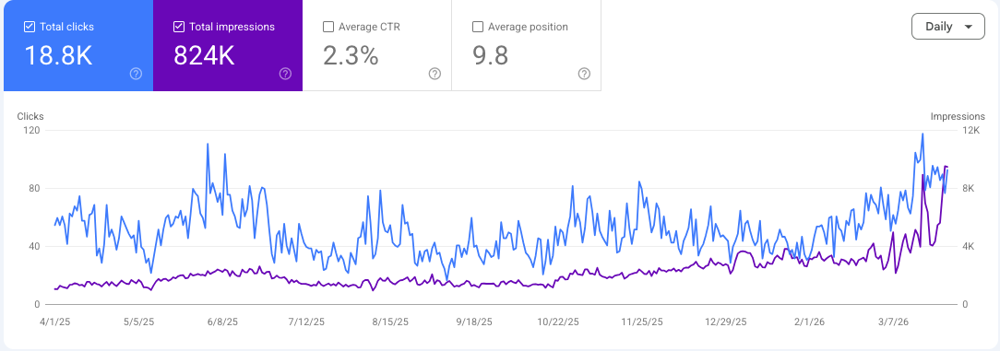
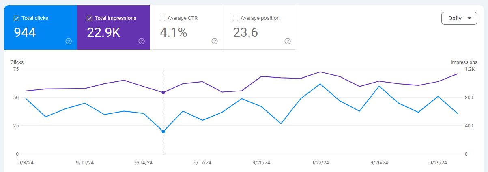
Objective: improve organic visibility and move competitive search terms into stronger positions.
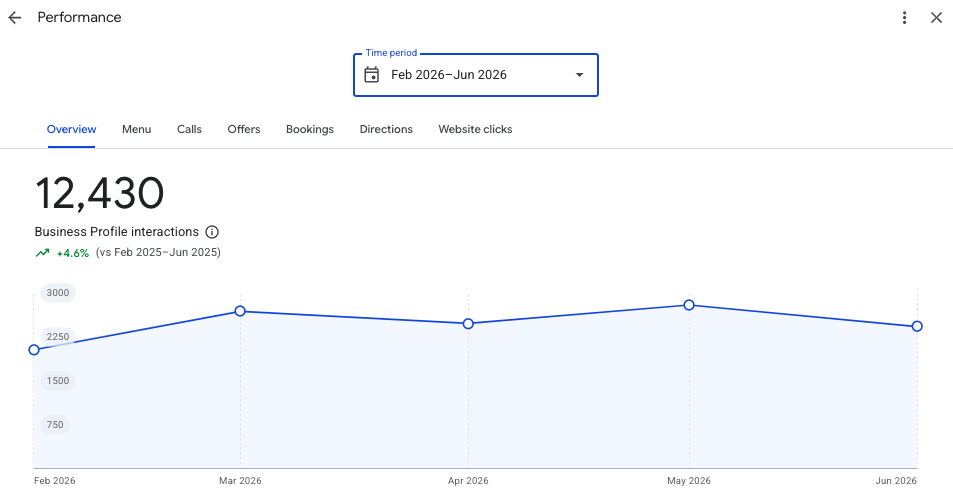
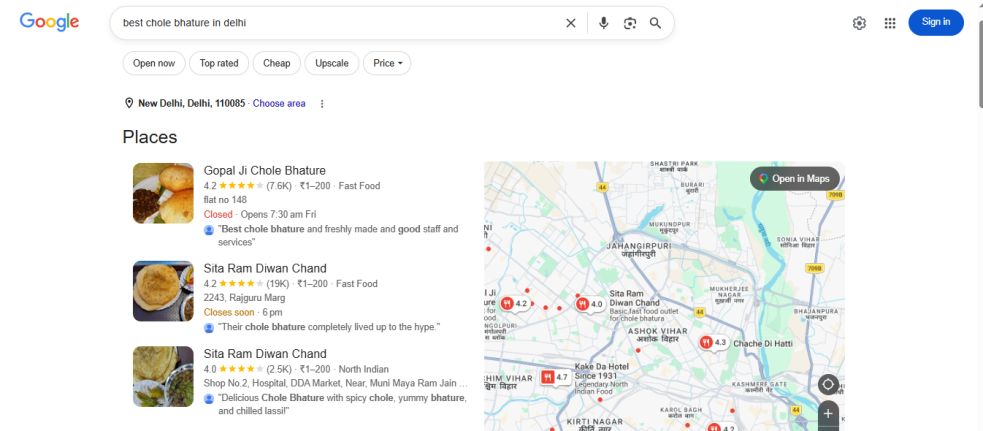
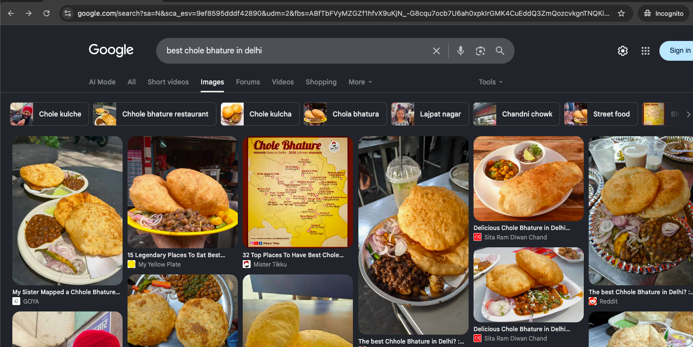
Combining location pages, Google Business Profile work and search-result optimization.
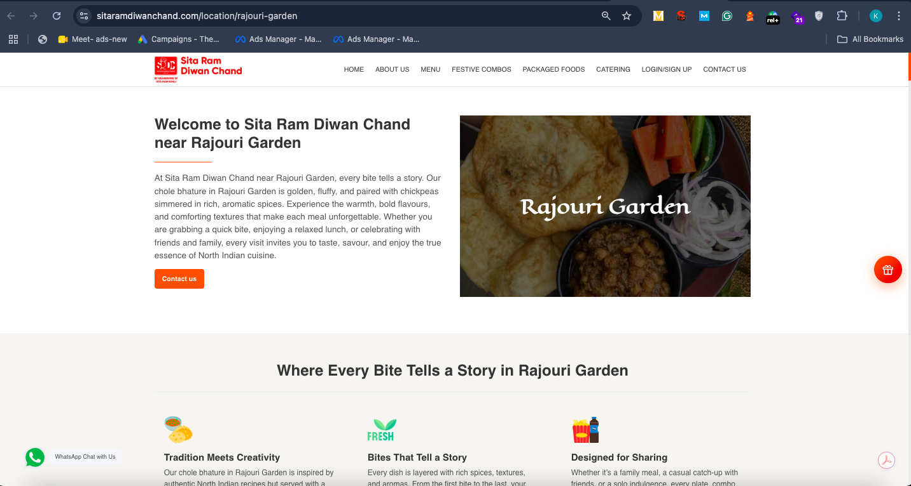
The work combined site structure, location intent and content architecture.
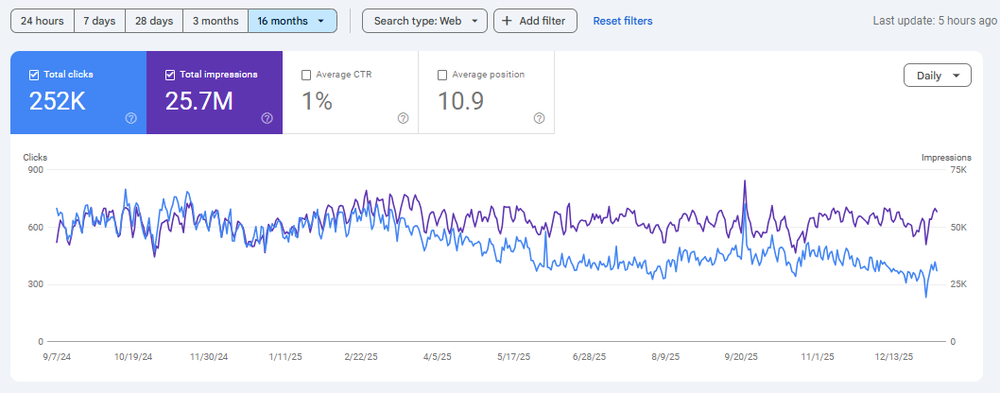
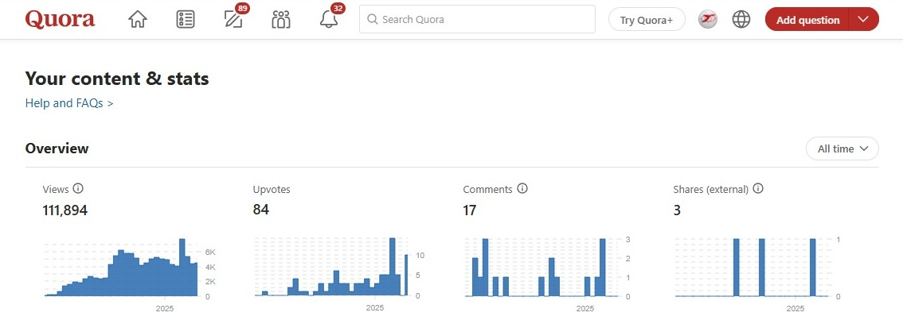
A combined search and referral approach across Google, Quora and Pinterest.
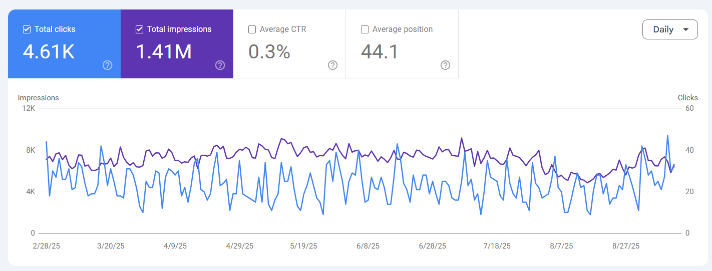
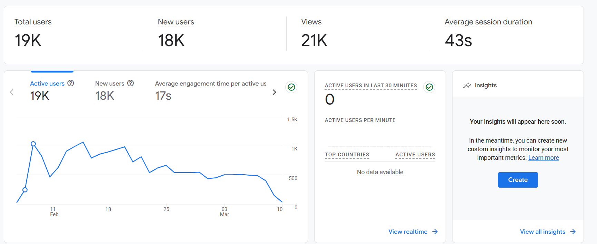
Using the agency website as a practical testbed for organic and discovery-led growth.
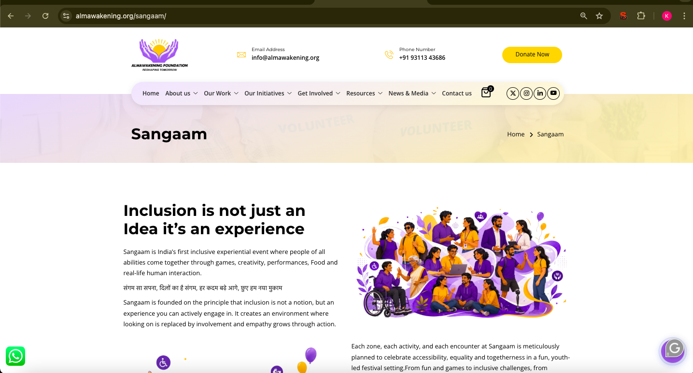
A structure-first SEO approach across service, event, FAQ and footer content.
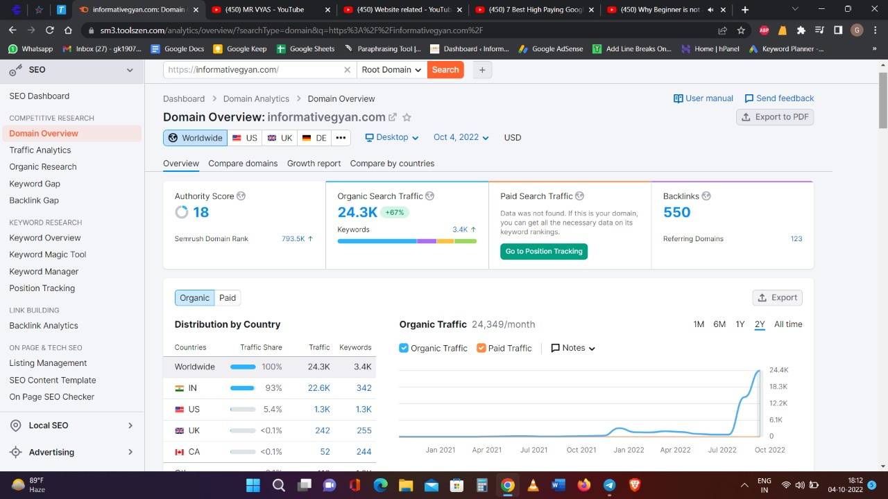
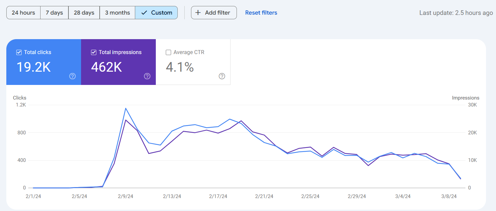
A personal project demonstrating end-to-end ownership of website, content and acquisition.
A repeatable workflow that connects research, implementation and measurement.
Audit, search intent, competitors, GSC/GA baseline.
Page types, URL / location structure, internal links, content gaps.
Metadata, content, FAQs, footer, technical fixes, Google Business Profile.
Link building, Quora, Pinterest, Web Stories where relevant.
GSC/GA, rankings, SERP features, referrals, profile interactions.
Breadth matters because SEO problems change with search intent, business model and local or technical constraints.
Local SEO, location pages, GBP, content
Organic search, Quora, Pinterest, content
B2B SEO, GSC monitoring, ongoing optimization
Content structure, service pages, search visibility
Service and event pages, FAQs, internal linking
Technical + on-page, international / UK exposure
Content-led visibility, local / service intent
Search optimization, product / service visibility
Multi-industry SEO execution
Meta Ads is a current hands-on capability; Google Ads remains foundational and still developing.
Grounded in daily use across SEO, local and content distribution work.